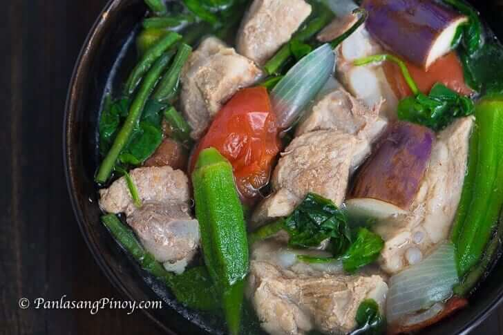
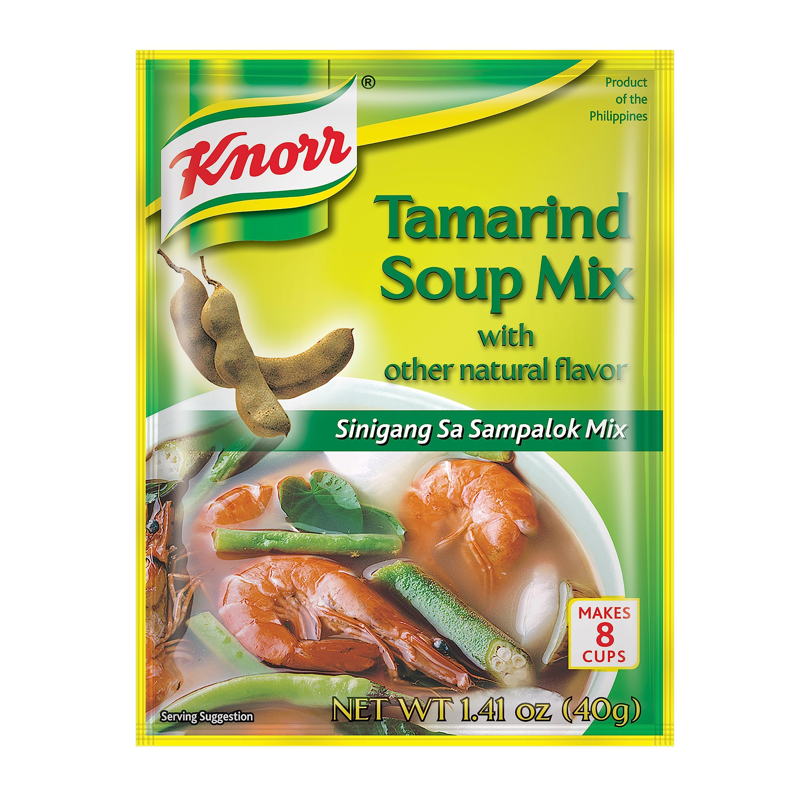

Sinigang

Description
Looking for a zesty delicious meal packed with nutritious vegetables that even your five-year old will love? Look no further. Sinigang is another Filipino staple that can be cooked with pretty much any meat you want!
The secret ingredient to this homey dish is...sinigang tamarind soup mix and green chili! This dish is best served during cold or rainy weather, serving to warm the stomach and release tension within the soul.

Ingredients
- Meat of your choice (I prefer beef or chicken)
- Spinach
- Fish Sauce
- String beans/sitaw
- Tomato
- Chili
- Water
- Sinigang Mix
Steps
- Heat the pot and put enough cooking oil to sauté onions.
- Add meat till cooked.
- Place in fish sauce and mix.
- Pour in water and bring to a boil.
- Put in the sinigang mix and chili.
- Add the string beans, tomatoes, and other firm veggies and simmer for 5 to 8 minutes.
- Put in the spinach, turn off the heat, and cover the pot to soften the spinach up
- Best served hot with rice! Enjoy.